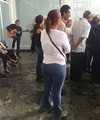

INFO: FUNCIÓN | INTEGRANTES | TARIFAS | DISTRIBUCIÓN
| RIDER |
I N I C I O
AÑOS: 2005 - 09 | 2010 | 2011 | 2012 | 2013 | 2014 | 2015 | 2016 | 2017 | 2018 | 2019 |
 C O N C I E
R T O S & A C T I V I D
A D E S
C O N C I E
R T O S & A C T I V I D
A D E S
2 0 2 0 (8)
I N I C I O
AÑOS: 2005 - 09 | 2010 | 2011 | 2012 | 2013 | 2014 | 2015 | 2016 | 2017 | 2018 | 2019 |
2 0 2 0 (8)
Enero
Febrero
Marzo
Abril
Mayo
Junio
Lunes, 06-01-2020
Estreno en YouTube del video "Resplandor" de la presentación en el Club Jóspital, La Laguna, Tenerife, el 23-11-2019 con Emilio Mendoza (Guitarra), Steve Russo (Cajón), Jenka Nordholm (Djembé) y Marie Bruess (Voz). Como se montó en el canal personal de EMilio y no en el de Ozono, se borró y se volvió a estrenar más tarde en abril.
Febrero


Jueves, 06-02-2020, 2:30 pm
Prestreno del video Guarapiche Blues, con asistencia de los estudiantes, el director Jorge Gómez Plazola y los personajes del cine venezolano Leopoldo Izaguirre y Roman Chalbaud, la compositora Beatriz Bilbao, así como la celebración del cumpleaños de la directora y productora del video, María Cristina Capriles. Emilio dio un concierto solo con su guitarra. Sede de ESCINETV, Escuela de Cine y Televisión, Caracas,

Sábado, 22-02-2020, 11:00 am
Velorio de Chaba de Girón, anterior administradora de FUNDEF cuando yo era presidente, (1995-97), esposa de mi gran amigo Israel Girón, director de la ODILA, La Guairita, Caracas.
Sábado, 14-02-2020
Estreno del CD Guarapiche Blues en sus dos versiones, en español e inglés, en el canal de Ozono Jazz en YouTube, música + info sobre las piezas en un solo documento. Estos dos videos se borraron después de tener mas de 100 visitas, por preferirse la opción de Distrokid
Marzo
Cuarentena por Coronavirus, editando videos y mejorando el canal de YouTube, trabajando con la disennadora Mónica Ambrosio sobre la edición del CD en español e inglés.
Abril

Viernes, 03-04-2020
Estreno en YouTube del video "Resplandor" ahora en el canal de Ozono.
Martes, 14-04-2020
Se monta todo el CD Guarapiche Blues en Distrokid.com, para salir en iTunes, Spotify y muchos otros portales de distribucieon de música.

Miércoles, 29-04-2020 (Emilio, Juan y Lizardo)
Estreno en YouTube de los videos "Dos Joroponovos: Encanto (joroponovo arpeado) y Espirales (joroponovo bandoleado)", ejecutados en vivo. Son segmentos del video documental de ESCINETV, dirección María Cristina Caprieles, sobre el concierto Homenaje al Maestro Alfredo del Mónaco, Unearte, el 17 de julio, 2016, bajo la dirección de Beatriz Bilbao. Emilio hace el comentario antes del inicio de Espirales sobre la solicitud formal presentada a la Comisión de Ambiente, Asamblea Nacional, de enmienda constitucional, Art. 127, sobre el cuidado del entorno sonoro natural. Para mås información al respecto, ver al final de la página de INICIO. Curiosamente, los dos videos se montaron en YouTube sin saber que ese día era el cumpleaños de Alfredo del Mónaco y al mismo tiempo era el cuarto mes de abril, Diá Mundial de Consciencia del Ruido. Esto lo supe en la noche. Fueron dos coincidencias muy altas, sin saberlo.
Mayo
Sábado, 2 de mayo, 2020
Estreno de Natura en Dristokid
Domingo, 3 de mayo 2020
Estreno de Laberinto Duo en Dristokid
Cuarentena por Coronavirus, editando videos y mejorando el canal de YouTube, trabajando con la diseñadora Mónica Ambrosio sobre la edición del CD físico en español e inglés.


{kind=link}
Junio